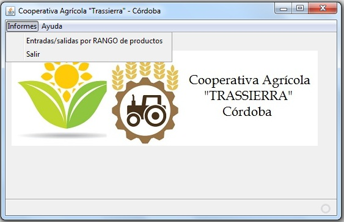

Cooperativa Agrícola "Trassierra" --- AYUDA GENERAL
Bienvenido a la aplicación de gestión Cooperativa Agrícola "Trassierra".

La aplicación permite:
Obtener informes de entradas y salidas para un rango de productos.